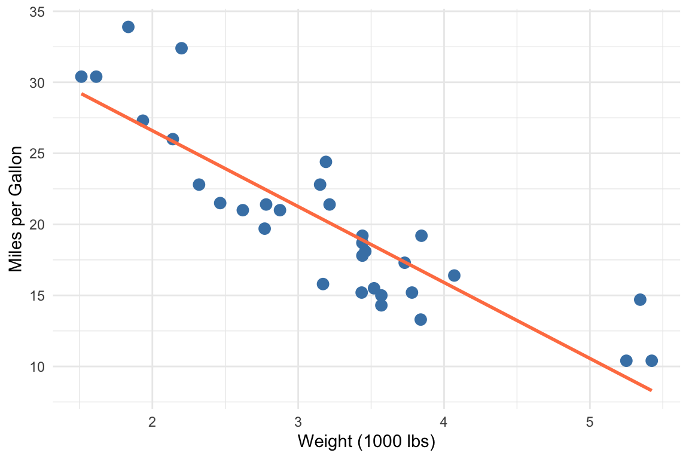

5 Reproducible Documents with Quarto
After completing this chapter, you will be able to:
- Explain the benefits of literate programming for reproducible research
- Create Quarto documents that combine code, text, and results
- Use Markdown syntax for text formatting
- Configure document settings with YAML headers
- Control code execution and output with chunk options
- Include mathematical equations and figures
- Run Python (and mixed R/Python) code in a Quarto document
- Use callouts, tabsets, divs, and cross-references to structure a document
- Cite sources from a BibTeX file
- Render documents to multiple output formats from RStudio and the command line
5.1 What is Quarto?
Quarto is an open-source scientific publishing system that enables you to create dynamic documents combining narrative text, code, and results (Posit Software, PBC, 2024). It represents the next generation of literate programming tools, building on the legacy of R Markdown (Xie et al., 2018) while extending support to multiple programming languages including R, Python, Julia, and Observable JavaScript.
The name “Quarto” comes from the Latin word for a quarter sheet of paper folded twice to create an eight-page booklet—an evocative reference to the history of publishing and scholarly communication. Just as the quarto format revolutionized book publishing in the 16th century, the Quarto system is revolutionizing how scientists share their work.
Quarto documents are plain text files with the .qmd extension that can be rendered to:
- HTML documents and websites
- PDF documents
- Microsoft Word documents
- Presentations (PowerPoint, reveal.js)
- Books (like this one!)
- Interactive dashboards
Why Use Quarto?
Quarto solves fundamental problems in scientific communication:
- Reproducibility
- Your analysis and its documentation live together. Anyone can re-run your code and verify your results.
- Efficiency
- No more copying and pasting results between applications. Update your data, re-render, and all figures and statistics update automatically.
- Transparency
- Readers can see exactly how results were generated. The code is the methods section.
- Collaboration
- Plain text files work seamlessly with version control systems like Git (Chapter 19).
- Flexibility
- Write once, render to multiple formats. The same document can produce a lab report, a presentation, and a web page.
This entire textbook was written in Quarto! You can see the source files in the repository.
The Literate Programming Philosophy
Quarto is built on the concept of literate programming, introduced by Donald Knuth in 1984. The idea is revolutionary yet simple: instead of writing code with occasional comments, write a human-readable document that happens to contain executable code. As Knuth wrote:
“Let us change our traditional attitude to the construction of programs: Instead of imagining that our main task is to instruct a computer what to do, let us concentrate rather on explaining to human beings what we want a computer to do.”
In practice, this means your analysis scripts become documents that tell a story. The code is woven together with explanations of why you’re doing each step, what you expect to find, and how the results should be interpreted. When you share this document, readers understand not just the mechanical steps, but the reasoning behind each analytical choice.
This approach has profound implications for science:
Your methods become self-documenting. No more separate “methods” documents that drift out of sync with your actual code.
Errors become visible. When code and narrative live together, inconsistencies between what you say you’re doing and what you’re actually doing become obvious.
Learning accelerates. Well-documented analyses serve as tutorials for others (and for your future self) who want to learn your techniques.
5.2 Markdown: The Foundation
Markdown is a lightweight markup language that lets you add formatting to plain text. Created by John Gruber in 2004, it’s designed to be readable in its raw form while rendering to beautifully formatted documents.
Why Markdown?
Markdown’s appeal lies in its simplicity—there are no complex menus or formatting palettes to learn. You write plain text with a few special characters, and the formatting appears when the document renders. This simplicity makes Markdown incredibly portable: your files work on any computer, in any text editor, without special software. Because Markdown files are plain text, they’re also future-proof—unlike proprietary formats that may become obsolete, text files will always be readable. Finally, plain text is version-control friendly: Git can track every change you make, showing exactly what was added, removed, or modified between versions.
Basic Text Formatting
Renders as:
italic text or italic text
bold text or bold text
bold and italic or bold and italic
strikethrough text
inline code
Headers
Create hierarchical structure with headers:
In Quarto books, each chapter typically starts with a single # header, with subsequent sections using ## and ###.
Lists
Unordered lists use asterisks, hyphens, or plus signs:
- Item one
- Item two
- Nested item (indent with 2 spaces)
- Another nested item
- Item three
Ordered lists use numbers:
- First step
- Second step
- Third step
- Sub-step
- Another sub-step
Task lists add a checkbox to each item (rendered in HTML output):
Links and Images
A bare URL in angle brackets becomes a clickable link with the URL as its text.
Blockquotes
This is a blockquote. Use it for quotations or to highlight important text.
Multiple paragraphs work too.
Code Blocks
For displaying code without execution, use fenced code blocks with language specification:
Tables
Create tables with pipes and hyphens (the result is Table 5.1):
| Column 1 | Column 2 | Column 3 |
|---|---|---|
| Left | Center | Right |
| aligned | aligned | aligned |
The colons indicate alignment: :--- left, :---: center, ---: right.
Tables produced by code. Most tables in a report come from a code chunk rather than being typed by hand. Give the chunk a label starting with tbl- and a tbl-cap, and the table becomes numbered and cross-referenceable exactly like a hand-written one:
knitr::kable() is the simplest R option; the gt package (used throughout Chapter 8) produces publication-quality tables from the same pipeline.
Horizontal Rules
Create a horizontal divider with three or more hyphens, asterisks, or underscores:
Footnotes
Add footnotes for additional context without interrupting the flow:
This is a statement that needs a citation.1
Definition Lists
Define terms with a colon-based syntax:
- Term 1
- Definition of the first term.
- Term 2
- Definition of the second term.
- You can have multiple definitions.
Line Breaks and Paragraphs
In Markdown, a single line break is ignored—you need a blank line to create a new paragraph. To force a line break without a new paragraph, end the line with two spaces or use <br>.
Table 5.2 collects the syntax introduced above.
| Format | Syntax | Result |
|---|---|---|
| Bold | **text** |
text |
| Italic | *text* |
text |
| Code | `code` |
code |
| Link | [text](url) |
text |
| Strikethrough | ~~text~~ |
|
| Subscript | H~2~O |
H2O |
| Superscript | 10^2^ |
102 |
5.3 Quarto Document Structure
A Quarto document has three main parts:
- YAML Header: Document metadata and settings
- Markdown Content: Text and formatting
- Code Chunks: Executable code blocks
YAML Header
The YAML header appears at the top of the document, enclosed by triple dashes:
YAML stands for “YAML Ain’t Markup Language” (a recursive acronym). It uses key-value pairs with consistent indentation.
Common YAML Options
| Option | Description |
|---|---|
title |
Document title |
author |
Author name(s) |
date |
Publication date (today for current date, or "2025-01-15") |
format |
Output format(s) |
toc |
Include table of contents |
toc-depth |
How many header levels in TOC |
number-sections |
Number the section headings |
code-fold |
Collapse code by default |
execute |
Global code execution options (echo, warning, message, …) |
bibliography |
BibTeX file for citations (Section 5.10) |
YAML is indentation-sensitive: nested options must be indented with spaces (never tabs), and a colon must be followed by a space. An error such as “YAML parse exception” almost always means a mis-indented line or a missing quote around a value that contains a colon.
5.4 Code Chunks
Code chunks are the heart of Quarto’s power—they let you embed executable code directly in your document.
Basic Syntax
In Quarto, code chunks use this syntax:
Chunk Options
Control chunk behavior with special comments starting with #|:
Essential Chunk Options
The options you will use most are listed in Table 5.4.
| Option | Description | Default |
|---|---|---|
echo |
Show code in output | true |
eval |
Execute the code | true |
include |
Include chunk in output | true |
output |
Show results | true |
warning |
Show warnings | true |
message |
Show messages | true |
error |
Continue on error | false |
cache |
Cache results | false |
label |
Name the chunk (and its cross-reference id) | none |
fig-cap / tbl-cap
|
Caption a figure / table | none |
code-fold |
Collapse the code behind a toggle | false |
echo: fenced |
Show the chunk with its fence and options (for teaching) | — |
Set defaults for every chunk in the YAML execute: block (Table 5.3) and override per chunk only where needed. A hidden setup chunk at the top of a document is typically #| include: false.
Controlling Output
#> Min. 1st Qu. Median Mean 3rd Qu. Max.
#> -2.69870 -0.56408 -0.04707 -0.01358 0.43937 2.71762Hide code, show results (great for final reports):
Show code, hide results (for teaching):
Figure Options
Control figure appearance with the options in Table 5.5; Figure 5.2 below is produced by such a chunk:

| Option | Description |
|---|---|
fig-cap |
Figure caption |
fig-width |
Width in inches |
fig-height |
Height in inches |
fig-align |
Alignment: left, center, right |
out-width |
Output width (e.g., “80%”) |
fig-dpi |
Resolution of raster output (e.g., 300 for print) |
fig-format |
Format: png, svg, pdf |
fig-subcap |
List of sub-captions for a chunk that draws several plots |
layout-ncol |
Number of columns to arrange multiple plots in |
Subfigures. A chunk that produces more than one plot can label each with fig-subcap and arrange them with layout-ncol; the panels are referenced as @fig-label-1, @fig-label-2, and so on:
5.5 Python in Quarto
Everything above works unchanged for Python: replace {r} with {python} and the chunk runs when the document renders. The mechanics differ in one respect. R chunks are executed by the knitr engine, which ships with R; Python chunks are executed by the Jupyter engine, so you need a Python environment with Jupyter installed (Section 12.3):
Quarto chooses the engine from the first chunk it sees, or you can state it in the YAML header:
A {python} chunk accepts the same #| options as an R chunk (echo, eval, fig-cap, label, and so on), and a matplotlib or seaborn figure produced in a chunk labelled fig-... with a fig-cap becomes a cross-referenceable figure exactly as a ggplot does.
Mixing R and Python in one document. A document can use only one engine, but the knitr engine can run Python chunks through the reticulate R package: install.packages("reticulate"), then {python} chunks in an otherwise-R document execute in a Python session, and objects pass between languages as py$name (in R) and r.name (in Python). This is the route to take when most of a document is R and a step or two is Python.
Jupyter notebooks. Quarto also renders .ipynb files directly, so an existing notebook needs no conversion:
By default Quarto uses the outputs already stored in the notebook; add --execute to re-run it during rendering. Section 2.9 compares the two formats, and Chapter 12 introduces the Python language itself.
5.6 Mathematical Equations
Quarto supports LaTeX math notation for equations; Chapter 17 covers the notation in depth, and Appendix H is a symbol reference.
Inline Math
Use single dollar signs for inline equations:
The mean is calculated as \(\bar{x} = \frac{1}{n}\sum_{i=1}^{n} x_i\).
Display Math
Use double dollar signs for centered equations:
\[ \sigma^2 = \frac{1}{n-1}\sum_{i=1}^{n}(x_i - \bar{x})^2 \]
Common Math Notation
Table 5.6 lists the constructs you will need most often.
| Symbol | Code | Result |
|---|---|---|
| Greek letters | $\alpha, \beta, \gamma$ |
\(\alpha, \beta, \gamma\) |
| Subscript | $x_1, x_{12}$ |
\(x_1, x_{12}\) |
| Superscript | $x^2, x^{10}$ |
\(x^2, x^{10}\) |
| Fraction | $\frac{a}{b}$ |
\(\frac{a}{b}\) |
| Square root | $\sqrt{x}$ |
\(\sqrt{x}\) |
| Sum | $\sum_{i=1}^{n}$ |
\(\sum_{i=1}^{n}\) |
| Product | $\prod_{i=1}^{n}$ |
\(\prod_{i=1}^{n}\) |
| Integral | $\int_0^1 f(x)dx$ |
\(\int_0^1 f(x)dx\) |
Example: Statistical Formulas
The probability density function of a normal distribution:
\[ f(x) = \frac{1}{\sigma\sqrt{2\pi}} e^{-\frac{1}{2}\left(\frac{x-\mu}{\sigma}\right)^2} \]
A regression equation:
\[ Y_i = \beta_0 + \beta_1 X_{1i} + \beta_2 X_{2i} + \epsilon_i \]
5.7 Callout Blocks
Quarto provides special callout blocks for highlighting information:
::: {.callout-note}
This is a note callout for additional information.
:::
::: {.callout-warning}
This warns readers about potential issues.
:::
::: {.callout-important}
This highlights critical information.
:::
::: {.callout-tip}
This provides helpful tips.
:::
::: {.callout-caution}
This urges caution.
:::
::: {.callout-tip title="A custom title"}
Add `title="..."` for your own heading.
:::
::: {.callout-note collapse="true"}
Add `collapse="true"` and the box starts folded; click to open.
:::This is a note callout for additional information.
This warns readers about potential issues.
This provides helpful tips.
This one starts folded. Collapsed callouts are handy for optional detail or exercise answers.
The five types differ only in icon and color; pick by meaning (Table 5.7).
| Type | Color | Use for |
|---|---|---|
note |
Blue | Supplementary information |
tip |
Green | Helpful suggestions and shortcuts |
warning |
Orange | Potential problems or common mistakes |
important |
Red | Information the reader must not miss |
caution |
Red | Dangerous or irreversible operations |
A callout is a fenced div: a line of three or more colons with the class in braces, the content, and a closing line of colons. The opening and closing fences must each sit on their own line with a blank line around the block, or the div will not close and the rest of the page renders inside the box.
5.8 Tabsets, Divs, and Spans
The same ::: fence syntax gives you several other structures.
Tabsets present alternatives (R vs. Python, source vs. output) in tabs. Every heading inside the div becomes a tab:
Layout divs arrange their children. {layout-ncol=2} places two figures side by side; {.column-margin} pushes content into the margin; {.column-page} lets a wide table use the full page width:
Generic attributes in braces can follow any div, heading, image, or code block: an id (#name), classes (.name), and key-value pairs. This is how headings get cross-reference ids and how images get sizes and alt text:
Spans apply attributes to a run of inline text with [text]{...}:
Nested divs need more colons on the outside (:::: around :::) so that Quarto can tell which fence closes which block.
5.9 Cross-References
Reference figures, tables, and sections:
Figures and Tables
See Figure 5.2 for the scatter plot. The options are listed in Table 5.4.
Sections
As discussed in Chapter 5, Quarto enables reproducible documents.
The label prefix determines the reference type (Table 5.8). A code chunk becomes a referenceable figure when its label starts with fig- and it has a fig-cap; Markdown tables take their id from the caption line : Caption {#tbl-id}. Quarto numbers everything automatically, so inserting a figure renumbers the rest.
| Type | Prefix | Where the id goes | Reference |
|---|---|---|---|
| Figure | fig- |
#| label: fig-name or {#fig-name}
|
@fig-name |
| Subfigure | fig- |
fig-subcap panels of fig-name
|
@fig-name-1 |
| Table | tbl- |
#| label: tbl-name or : Caption {#tbl-name}
|
@tbl-name |
| Section | sec- |
## Heading {#sec-name} |
@sec-name |
| Equation | eq- |
$$ ... $$ {#eq-name} |
@eq-name |
| Code listing | lst- |
#| label: lst-name with lst-cap
|
@lst-name |
Quarto also recognises thm-, lem-, def-, exm-, and exr- for theorem-style blocks (::: {#thm-clt}). Capitalize the prefix (@Fig-name) to begin a sentence with “Figure” rather than “fig.”
Equations
The label must sit on the same line as the closing $$, separated by a space. Only labelled equations are numbered. Section 17.13 shows how to align a multi-line derivation under one number.
5.10 Citations
Quarto handles references the same way it handles cross-references: each source has a key, and you cite the key with @. The keys live in a BibTeX file (.bib), a plain-text database in which each entry looks like this:
Name the file in the YAML header, then cite by key:
---
title: "Report"
bibliography: references.bib
---
Knuth introduced literate programming [@knuth1984literate].
@knuth1984literate argued that programs should be written for people.
Several authors agree [@knuth1984literate; @xie2018r].
A page reference [@knuth1984literate, p. 99] or a prefix [see @knuth1984literate].Bracketed citations render in parentheses, “(Knuth 1984)”; a bare @key renders in the running text, “Knuth (1984)”. Quarto compiles a reference list at the end of the document automatically, or wherever you place a ::: {#refs} div. The default style is Chicago author-date; add csl: apa.csl (any style file from the CSL repository) to change it.
Reference managers such as Zotero export BibTeX directly, and Google Scholar’s “Cite” button offers a BibTeX entry for any paper. Keep one references.bib per project and let it grow.
5.11 Rendering Documents
From RStudio
- Click the Render button, or
- Use the keyboard shortcut:
Ctrl+Shift+K(Windows/Linux) orCmd+Shift+K(Mac)
While writing, Ctrl+Alt+I / Cmd+Option+I inserts a new code chunk and Ctrl+Shift+Enter / Cmd+Shift+Enter runs the current chunk without rendering the whole document (more in Appendix A).
From Command Line
Live Preview
For interactive editing:
This opens a browser window that automatically updates as you edit. --port 8080 fixes the port and --no-browser prints the URL instead of opening a window (useful on a remote machine).
The Quarto Command Line
The quarto program has a handful of subcommands you will use regularly (Table 5.9).
| Command | What it does |
|---|---|
quarto render file.qmd |
Render to the document’s default format |
quarto render file.qmd --to pdf |
Render to one format (html, pdf, docx, revealjs, …) |
quarto render file.qmd --to all |
Render every format listed in the YAML |
quarto render file.qmd --output out.html |
Choose the output file name |
quarto render file.qmd -P n:100 |
Set a document parameter (params: in YAML) |
quarto render |
Render the whole project (_quarto.yml) |
quarto preview file.qmd |
Live preview that re-renders on save |
quarto create project |
Scaffold a new project, website, or book |
quarto check |
Verify the installation (R, Python/Jupyter, LaTeX) |
quarto install tinytex |
Install a minimal LaTeX so PDF rendering works |
quarto publish gh-pages |
Publish the rendered site (see Section 19.11) |
quarto --version |
Print the installed version |
5.12 Multiple Output Formats
Render to multiple formats from one source:
Then render all formats:
Without --to all, quarto render produces only the first format listed. Each format accepts its own options, nested under its name.
HTML Options
HTML is the richest target: it supports folding code, tabsets, interactive figures, and a floating table of contents.
| Option | Description | Values |
|---|---|---|
toc-location |
Where the TOC sits |
left, right, body
|
code-fold |
Collapse code behind a toggle |
true, false, show
|
code-tools |
Menu to view/copy the full source |
true, false
|
theme |
Bootswatch visual theme |
default, cosmo, flatly, darkly, … |
embed-resources |
Bundle images, CSS, and JS into one .html file |
true, false
|
embed-resources: true is the option to remember when you email a report: without it the HTML file depends on a folder of supporting files that must travel with it.
PDF Options
PDF output passes through LaTeX (Chapter 17), so a LaTeX installation is required (quarto install tinytex provides a small one).
| Option | Description | Values |
|---|---|---|
documentclass |
LaTeX document class |
article, report, book
|
geometry |
Page size and margins |
margin=1in, letterpaper, … |
fontsize |
Body text size |
10pt, 11pt, 12pt
|
colorlinks |
Colored rather than boxed hyperlinks |
true, false
|
keep-tex |
Keep the intermediate .tex file for debugging |
true, false
|
Word Options
Word output is the format collaborators without Quarto can edit. A reference document supplies the styles (fonts, heading sizes, margins) that the generated .docx inherits, so a journal’s or lab’s template can be applied without touching the source:
Run quarto pandoc -o custom-reference.docx --print-default-data-file reference.docx to obtain a starting template, edit its styles in Word, and point reference-doc at the result.
5.13 Project Organization
For multi-document projects (like this book), use a _quarto.yml file:
5.14 Best Practices
Document Structure
- Start with clear objectives: What should readers learn?
- Organize hierarchically: Use headers to create logical sections
- Balance code and narrative: Explain the “why” not just the “what”
-
Use meaningful chunk labels:
#| label: fig-gene-expressionnot#| label: chunk1
Code Quality
- Show relevant code: Hide boilerplate, show analysis
- Comment your code: Explain complex operations
- Use consistent style: Follow a style guide (tidyverse, etc.)
- Set global options: Configure defaults in YAML, override as needed
Reproducibility
- Document your environment: Include package versions
-
Use relative paths: Avoid
/Users/yourname/... - Set a random seed: For reproducible random operations
- Version control: Track your .qmd files with Git (Chapter 19); GitHub Pages can publish the rendered site (Section 19.11)
# Document your R environment
sessionInfo()
#> R version 4.6.0 (2026-04-24)
#> Platform: aarch64-apple-darwin23
#> Running under: macOS Tahoe 26.6.2
#>
#> Matrix products: default
#> BLAS: /Library/Frameworks/R.framework/Versions/4.6/Resources/lib/libRblas.0.dylib
#> LAPACK: /Library/Frameworks/R.framework/Versions/4.6/Resources/lib/libRlapack.dylib; LAPACK version 3.12.1
#>
#> locale:
#> [1] en_US.UTF-8/en_US.UTF-8/en_US.UTF-8/C/en_US.UTF-8/en_US.UTF-8
#>
#> time zone: America/Los_Angeles
#> tzcode source: internal
#>
#> attached base packages:
#> [1] stats graphics grDevices utils datasets methods base
#>
#> other attached packages:
#> [1] gt_1.3.0 lubridate_1.9.5 forcats_1.0.1 stringr_1.6.0
#> [5] dplyr_1.2.1 purrr_1.2.2 readr_2.2.0 tidyr_1.3.2
#> [9] tibble_3.3.1 ggplot2_4.0.3 tidyverse_2.0.0
#>
#> loaded via a namespace (and not attached):
#> [1] Matrix_1.7-5 gtable_0.3.6 jsonlite_2.0.0 compiler_4.6.0
#> [5] tidyselect_1.2.1 xml2_1.5.2 splines_4.6.0 scales_1.4.0
#> [9] yaml_2.3.12 fastmap_1.2.0 lattice_0.22-9 R6_2.6.1
#> [13] labeling_0.4.3 generics_0.1.4 knitr_1.51 htmlwidgets_1.6.4
#> [17] pillar_1.11.1 RColorBrewer_1.1-3 tzdb_0.5.0 rlang_1.2.0
#> [21] stringi_1.8.7 xfun_0.58 fs_2.1.0 S7_0.2.2
#> [25] otel_0.2.0 timechange_0.4.0 cli_3.6.6 mgcv_1.9-4
#> [29] withr_3.0.2 magrittr_2.0.5 digest_0.6.39 grid_4.6.0
#> [33] hms_1.1.4 nlme_3.1-169 lifecycle_1.0.5 vctrs_0.7.3
#> [37] evaluate_1.0.5 glue_1.8.1 farver_2.1.2 rmarkdown_2.31
#> [41] tools_4.6.0 pkgconfig_2.0.3 htmltools_0.5.95.15 Summary
Quarto transforms how we communicate scientific work:
- Markdown provides simple, readable formatting syntax
- YAML headers configure document settings
- Code chunks embed executable, reproducible analysis
-
Python chunks run through Jupyter (or reticulate), and Quarto renders
.ipynbnotebooks directly -
Callouts, tabsets, and divs structure a document with the same
:::fence syntax - Multiple formats serve different audiences from one source
-
Cross-references and citations create professional, navigable documents from
@-keys and a.bibfile
The investment in learning Quarto pays dividends every time you write a report, prepare a presentation, or publish research. Your future self (and your collaborators) will thank you for the reproducibility.
Additional Reading
- Quarto Documentation — Official comprehensive guide
- Quarto Gallery — Examples and templates
- R Markdown Cookbook — Many techniques apply to Quarto
- Markdown Guide — Comprehensive Markdown reference
Exercises
Exercise 1: First Quarto Document
- Create a new file called
first_report.qmd - Add a YAML header with title, author, and date
- Write a brief introduction using headers, bold, and italic text
- Include a bulleted list of your analysis goals
- Render to HTML
Exercise 2: Code Integration
- Create a document that loads a dataset (use
mtcarsor similar) - Add a code chunk that calculates summary statistics
- Add a code chunk that creates a figure with a caption
- Use chunk options to hide code but show results for one chunk
- Use chunk options to show code but hide results for another
Exercise 3: Mathematical Notation
- Write a document explaining a statistical concept
- Include at least one inline equation
- Include at least one display equation
- Use appropriate callout blocks for tips and warnings
Exercise 4: Multi-Format Output
- Configure your document to render to both HTML and PDF
- Render both versions with
quarto render --to all - Note any differences in how content appears
- Adjust settings to optimize for each format
Exercise 5: Tables, Cross-References, and Citations
- Type a small pipe table by hand and give it a caption with a
{#tbl-...}id - Produce a second table from code (
knitr::kable(head(iris, 5))orpandas) with atbl-label andtbl-cap - Refer to both tables and to one figure from the text with
@ - Create a
references.bibwith two entries, addbibliography:to the YAML, and cite both sources (one in brackets, one in running text) - Render and check that the numbering and reference list are generated automatically
This is the footnote content.↩︎